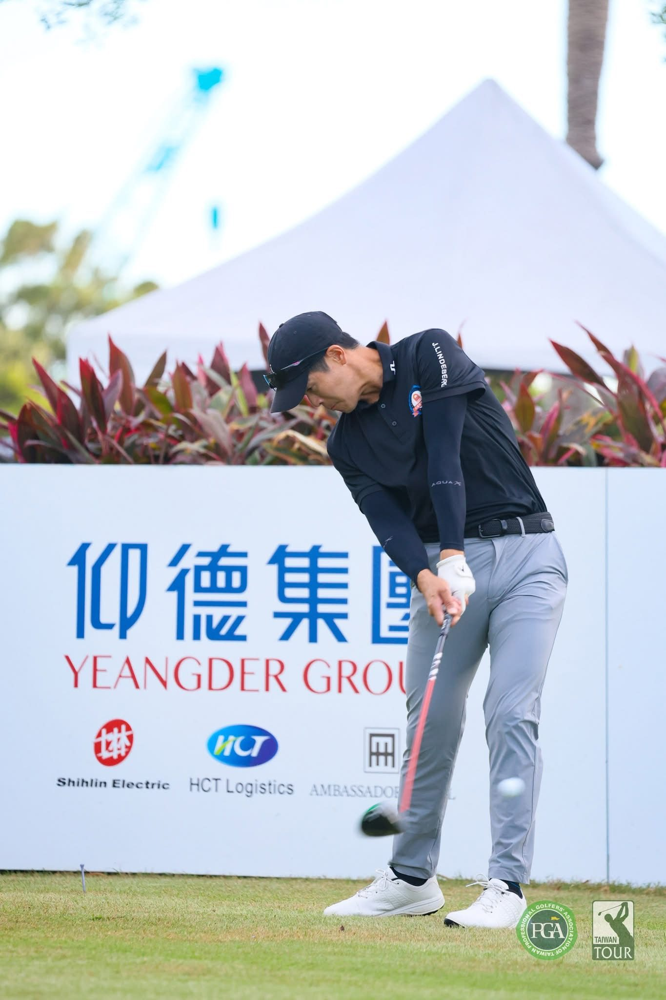
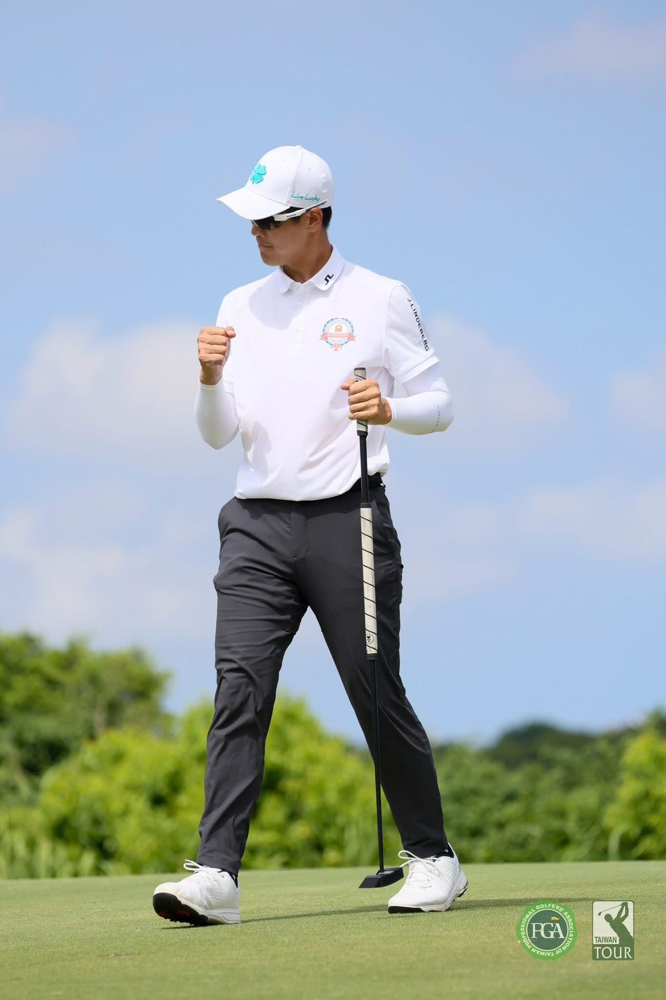

01我的故事
清大高材生不被定義的夢想
勁宏的職業生涯起始於一個極具勇氣的選擇。身為清大動機系碩士生，在傳統價值觀中，他理應進入科學園區成為一名工程師，然而對於高爾夫的熱愛，促使他在 23 歲那年選擇休學，毅然踏上職業選手的道路。與多數從小進入體育專科體系的選手不同，何勁宏在求學階段展現了極高的自律與時間管理能力，白天兼顧繁重學業，深夜則於練習場精進球技。這段非典型的成長路徑，使他具備了高等教育培養出的理性邏輯與分析思維，讓他在面對高難度的競技運動時，能以更科學、系統化的方式進行自我診斷與突破。

